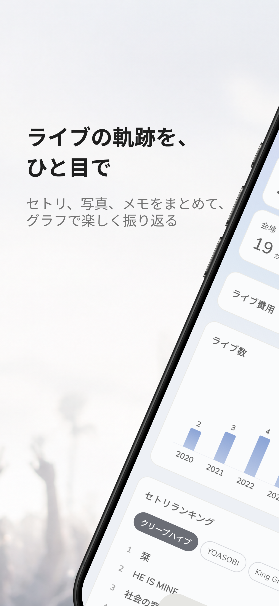
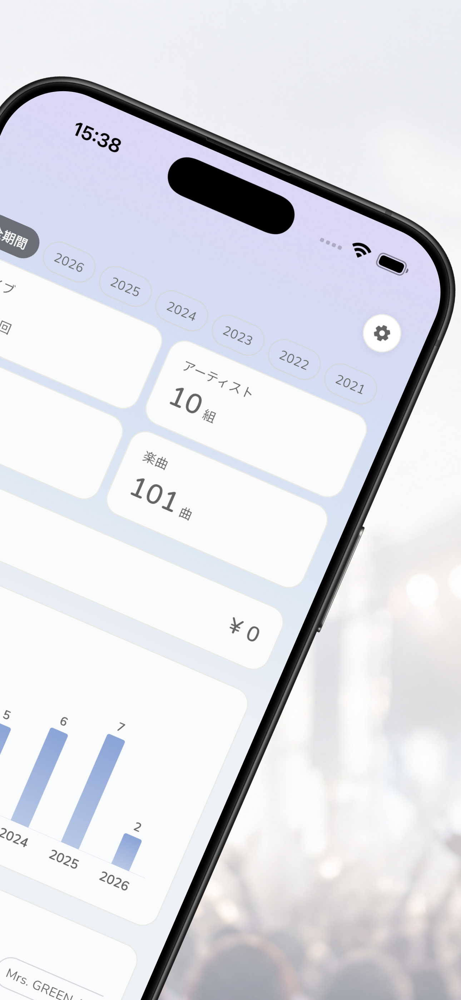
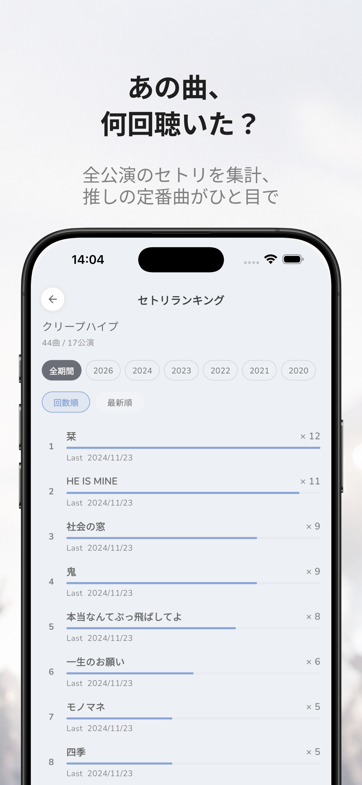

Setory（セトリー）
ライブ・コンサートの思い出を、もっと鮮やかに残そう。
ReleasedFeatures
1画面でまるごとライブ記録
基本情報・セットリスト・写真・座席番号・チケット/グッズ費用・タグ・感想を1画面で入力。予定ライブはセトリ未入力でも保存OK。
複数アーティスト対応のセトリ管理
本編もアンコールもきちんと分けて記録。フェスや対バンも、アーティストごとにセットリストを整理して残せます。
セトリ画像をOCRで読み取り
会場で撮ったセットリスト写真から曲名を自動抽出。手入力の手間を大幅にカットし、興奮そのままに記録できます。
アーティスト一覧＆詳細プロフィール
アーティストごとにライブ回数、よく聴いた曲ランキング、よく行った会場ランキング、プロフィール画像をまとめて表示。
検索＆タグで素早く振り返る
「これから」と年別の履歴に自動整理。アーティスト・会場・イベント・感想・タグでリアルタイム検索＆フィルター。
統計でライブ人生を可視化
ヒーロー統計、年別パルスチャート、楽曲ランキング、お気に入りアーティスト/会場、ライブ費用、タイムラインを一気に俯瞰。
「1年前の今日」リマインダー
ちょうど1年前に行ったライブをカード＆プッシュ通知でお知らせ。写真やセトリとともに、あの日の感動がふとよみがえります。
テーマ＆表示カスタマイズ
8種類の背景テーマで気分に合わせて見た目を切り替え。ライブ費用の表示/非表示も自由にコントロールできます。
Premium特典
年毎の詳細統計、写真の無制限保存、iCloudバックアップ/復元、ホームスクリーンウィジェットで、思い出をもっと深く・安全に。
Screenshots


